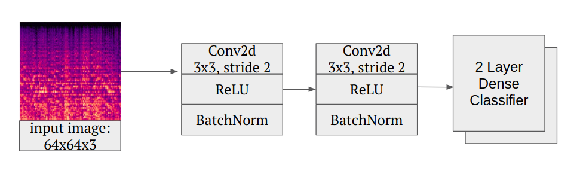
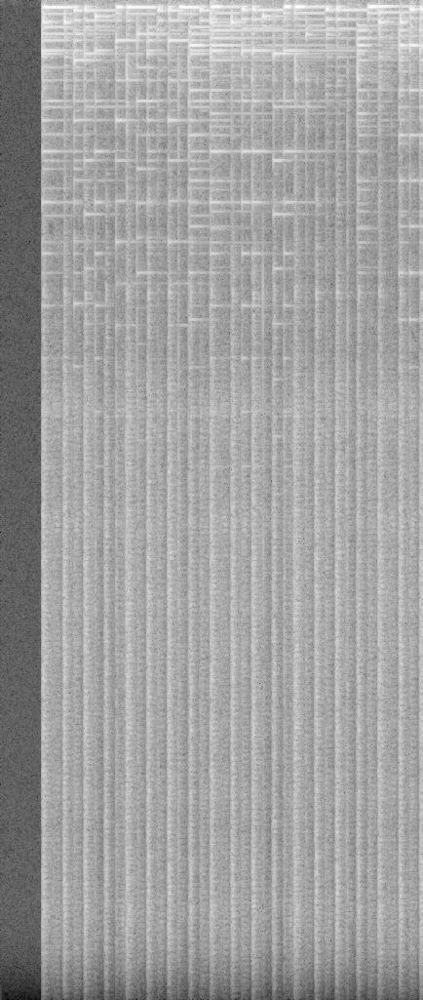
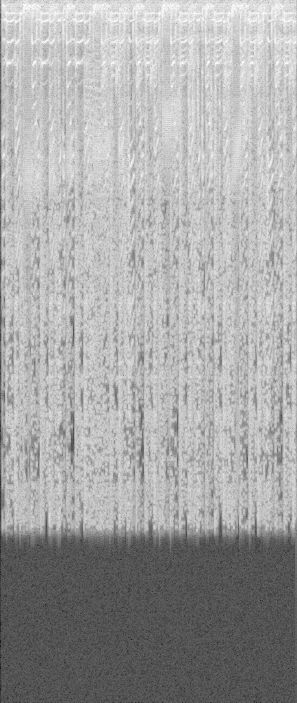

HipHopifier
Sujeeth Jinesh, Hriday Kamshatti, Jeremy AguilonSpring 2019 CS 4803 / 7643 Deep Learning: Class Project
Georgia Tech
This webpage template is based on a similar template from Dr. Devi Parikh's Intro to Computer Vision course.
Introduction / Background / Motivation
For this project, we explored methodologies in style transfer for audio. For example, adding in a hip hop style to a classical song sample, or jazz, etc. Style transfering music could help DJs make better blends of beats or transition between music easier. Furthermore, production music is a billion-dollar industry. These pieces are typically placed in the background of marketing media and film. They are often simple pieces that could benefit with the extra volume in genre that architecture like this provides.Currently, there are several approaches for musical style transfer involving Wide, Shallow Convolutional Neural Networks. We wanted to compare this pre-existing art with using deeper neural networks. Currently there are a few approaches for musical style transfer involving VAE's and GAN's (1), VAE's and GAN's (2), and Wavenet Autoencoders. While these architectures are certainly worth exploring as well, we focused on adding complexity to a shallow untrained neural net to explore how far this architecture can be pushed.
Approach
Preprocessing Pipeline
TODO
Baseline: Wide-Shallow Architecture
To establish a baseline, a wide-shallow architecture was implemented using the techniques in our reserach of prior art. This involved creating a neural network with one convolution of 4096 filters. As described in Audio Style Transfer by Grinsten, Duoung, Ozernov, and Perez, an untrained convolutional neural network can actually capture components of both the style and content.
Exploring Depth: Using VGG-19

Visualization of edges of deep convolutional architectures, such as VGG-16. We hypothesized that primitive shape
detection would aid style transfer (Credit
Sivaramakrishnan Rajaraman).
As an extension the shallow approach, we experimented if adding depth using a pretrained neural network would yield better results. Although VGG-19 was pretrained on an extremely different problem set, its ability to detect primitives such as edges and basic shapes was hypothesized to be useful, even for style transfer.
[TODO (Hriday): Update your bit]
TODO: Update Hriday is working on a minimalist implementation that uses an untrained CNN for style transfer. The structure of this untrained network is what will be experimented with. Since musical style is somewhat more abstract than images, the results obtained via this untrained network will explore what it means to transfer style without stringent constraints.
Experimental Plan
All 3 of us took slightly different approaches and tried to come up with different methods of style transfer. We wanted to compare different methods as more of a trial and error on what we could and can't do. We would primarily be using the GTZAN dataset along with sample content audio from Free Music Archive.- GTZAN Genre Collection: A 1000-track dataset of 30 second sound clips. This dataset encompasses 10 genres.
- GTZAN Genre Collection: License Free Songs for style transfer.
CNN-RNN Model Architecture (Sujeeth Jinesh)
This figure shows the architecture for the CNN/RNN model we'll be using for style transfer.VGG19 Model Architecture (Sujeeth Jinesh)
This figure shows the architecture for VGG19, we'll be using'block1_conv1', 'block2_conv1', 'block3_conv1', 'block4_conv1', 'block5_conv1' for style transfer.

CNN Model Architecture (Jeremy Aguilon)
This figure shows the architecture fot he CNN model we'll be using for style transfer. Style transfer pipeline(Hriday Kamshatti)
This figure shows the architecture we are currently using for style transfer.Sujeeth's Results
We were not able to successfully do style transfer on the CNN-RNN due to technical limitations. Adapting the paper ended up being a struggle, and so we ended up dropping it towards the end. However, we were able to get results for VGG19. The following are the audio filesContent Audio (Credits to Bensound)
Content Spectrogram Style Audio (GTZAN)
Style Spectrogram Resulting Audio VGG19 (1 iteration)
Output 1 Iteration Spectrogram
Resulting Audio VGG19 (200 iterations)
Output 200 Iterations Spectrogram
A visual representation of other songs we attempted to style transfer with over the course of 200 iterations (GIF):

Sujeeth's Analysis
Do the results make sense? Why or why not? Describe what kind of visualization/analysis you performed in order to verify that your results 1) are correct and 2) explain differences in performance from what was expected (e.g. what appeared in papers). Provide specific claims about why you think your model is or is not doing better, and justify those with qualitative and quantitative experiments (not necessarily just final accuracy numbers, but statistics or other data about what the model is doing).
The results I got were interesting, the audio is very garbled and wasn't very representative of any of either audio. I suspect it had to do with the reconstruction the process since we were dealing with images of spectrograms instead of the raw values of the spectrograms. When we converted the spectrogram back, we lost a lot of phase information, which we attempted to correct for with a lossy guess of the phase (essentially interpolating it using inverse fourier transform). This results in the audio being garbled. It was also fascinating to see how the audio also degrades the more iterations we used. At 1 iteration, the audio sounds reasonable, but at 200 iterations the tail end of the reconstruction becomes extremely garbled. The results make sense because a regular CNN wouldn't get phase information, and getting a decent reconstruction at all was fascinating to get. In order to verify we did style transfer correctly, we did a visual analysis of the spectrograms before and after style transfer as shown in the images in the results. Our loss was high over the different images, but gradually got better, tuning the different parameters of style transfer might have resulted in less jerkiness to reduce loss and less of a garbled audio file.Team Member Identification
Provide a list of team members and what each member did in a table
| Name | Description of Work |
|---|---|
| Sujeeth Jinesh | Converted audio into spectrograms to be fed into neural nets. Attempted to adapt Music Tagger CRNN, Priya Dwivedi's CNN-RNN, and VGG19 for style transfer task. Trained it against audio samples and ran it for multiple different iteration lengths to compare results. |
| Hriday Kamshatti | Adapted a pytorch style transfer pipeilne for use with a provided ANN. |
| Jeremy Aguilon | Created a CNN for music style transfer, to be compared with the above models in terms of performance. |